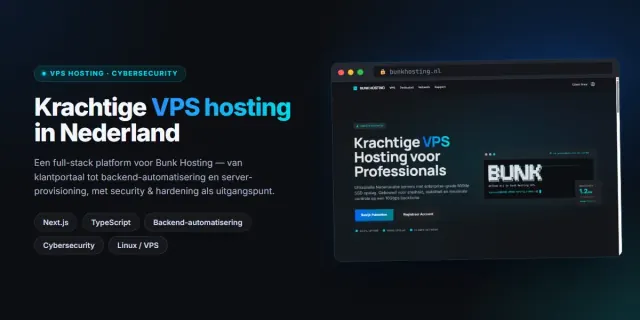

Website · Online · 2026
Bunk Hosting
Hostingplatform voor een Nederlandse VPS-provider
Een full-stack platform voor een Nederlandse VPS-hostingprovider: van het klantportaal en live serverstatistieken tot de backend-automatisering die servers provisioned en beheert. Gebouwd met security en hardening als uitgangspunt. Front-end met Next.js, TypeScript en Tailwind CSS, een eigen API en uitgeserveerd via Cloudflare.
Bezoek Bunk Hosting